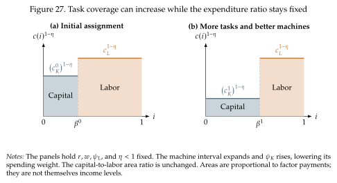

Returning to Weak Links¶
In Section 4.1, we used a CES production function to show that better machines need not remove the limits imposed by labor. We can now derive that production function from the tasks performed by each input. This also lets us distinguish making machines better at their existing tasks from expanding the set of tasks they perform. We follow the simple case in Jones and Tonetti (2026, Appendix~B.3), with equally weighted tasks and constant productivity within each factor's task bundle.
Task technology and assignment¶
As in Section 5, tasks lie on the interval \(i\in[0,1]\) and combine according to
The low elasticity means that producing more of one task is a poor substitute for producing less of another. Labor can perform every task with productivity \(\psi_L>0\). Machines have productivity \(\psi_K>0\) on tasks up to \(\beta\in(0,1)\) and cannot perform the remaining tasks:
Here \(\beta\) is a technological frontier: it tells us which tasks machines can perform. Suppose that machines are cheaper wherever they are available,
The optimal assignment then uses capital on \([0,\beta]\) and labor on \((\beta,1]\). We maintain this cost inequality in the comparisons below. An increase in \(\psi_K\) improves machines on their existing tasks; an increase in \(\beta\) makes additional tasks available to machines.
Recovering the CES production function¶
Within each bundle, tasks have the same productivity and the same weight in final output. The optimal allocation therefore uses the same quantity of the assigned input at every task in that bundle. This holds even though the task aggregator is not Cobb--Douglas (\(\eta\neq1\)), because there are no productivity differences across the tasks assigned to each input. If total inputs are \(K\) and \(L\), market clearing gives
on their respective intervals. Capital is spread over \(\beta\) tasks, while labor is spread over the remaining \(1-\beta\) tasks. Thus each capital task produces \(\psi_KK/\beta\), and each labor task produces \(\psi_LL/(1-\beta)\). Substituting these quantities into the task aggregator gives
This is a CES production function in aggregate capital and labor. The coefficients come from both the lengths of the task intervals and the amount of each input available per task. For a fixed \(\beta\), the aggregate elasticity is \(\sigma=\eta<1\). Relative factor prices change demand for the two task bundles, but assignment remains at the technological frontier as long as (6.11) holds. In Section 6.3, we will see how task reassignment can make the aggregate elasticity larger than the task elasticity.
Weak links and the output ceiling¶
Hold \(K,L,\beta\), and \(\psi_L\) fixed and let machines become arbitrarily productive. Because \((\eta-1)/\eta<0\), the capital term in (6.13) tends to zero, leaving
This is the output ceiling from Section 4.1, now expressed in terms of the tasks that still require labor. Better machines approach that ceiling while leaving the labor task bundle unchanged. Expanding \(\beta\) raises the ceiling itself: the same workers can concentrate on fewer tasks. At the same time, the available capital must be spread across more tasks. The distinction between better machines and more automated tasks is therefore built into the production function.
Stable factor shares can conceal extensive automation¶
Does the fraction of tasks performed by machines tell us their share of income? The task model shows why we need to distinguish task coverage from expenditure. For this comparison, hold factor prices \(r,w\) and labor productivity \(\psi_L\) fixed, allowing input quantities and output to adjust. Recall that \(c(i)\) is the cost of producing one unit of task \(i\). In this example, \(c(i)=c_K=r/\psi_K\) on capital tasks (\(i\leq\beta\)) and \(c(i)=c_L=w/\psi_L\) on labor tasks (\(i>\beta\)). Let \(P\) be the final-good price. CES task demand implies
The factor \(YP^\eta\) is common to all tasks, so we can read relative spending from the areas under \(c(i)^{1-\eta}\).

In Figure 27, the width of the capital rectangle is \(\beta\) and its height is \(c_K^{1-\eta}\). The labor rectangle has width \(1-\beta\) and height \(c_L^{1-\eta}\). Expenditure on capital tasks pays for capital, and expenditure on labor tasks pays for labor. Their area ratio therefore gives
Here \(\beta\) measures the fraction of automated tasks, whereas \(\alpha_K\) measures their share of expenditure. Holding \(r\), \(w\), and \(\psi_L\) fixed, log differentiation separates a change in task coverage from a change in machine productivity:
Both factor shares remain unchanged when
Increasing \(\beta\) widens capital's rectangle and narrows labor's. By itself, this raises capital's income share. Better machines lower \(c_K\), reducing the height of capital's rectangle because \(1-\eta>0\). Demand shifts toward the cheaper machine services, but since \(\eta<1\) the increase in their relative quantity is smaller than the fall in their relative price. Their spending weight therefore falls.
The second panel combines these changes so that the ratio of the two shaded areas is the same as before. For a finite change, the exact offset requires
More tasks are automated, yet both factor shares remain unchanged. Thus stable income shares can conceal a substantial change in the division of work. This comparison holds factor prices fixed; input quantities, output, and the levels of factor payments can adjust.